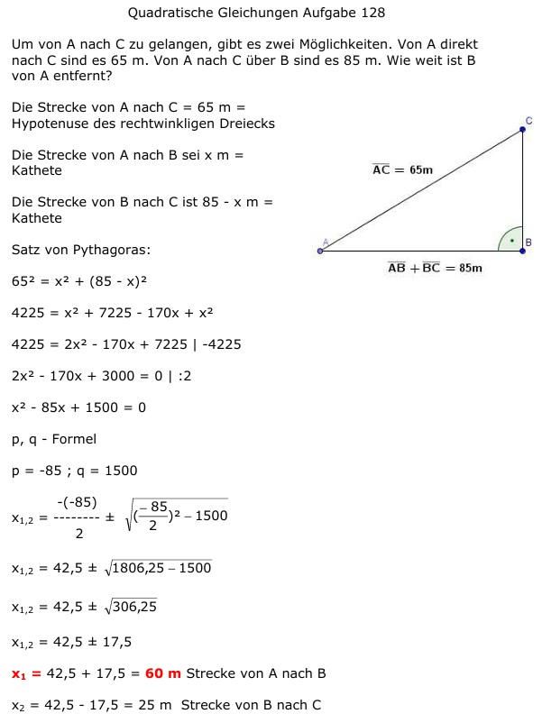
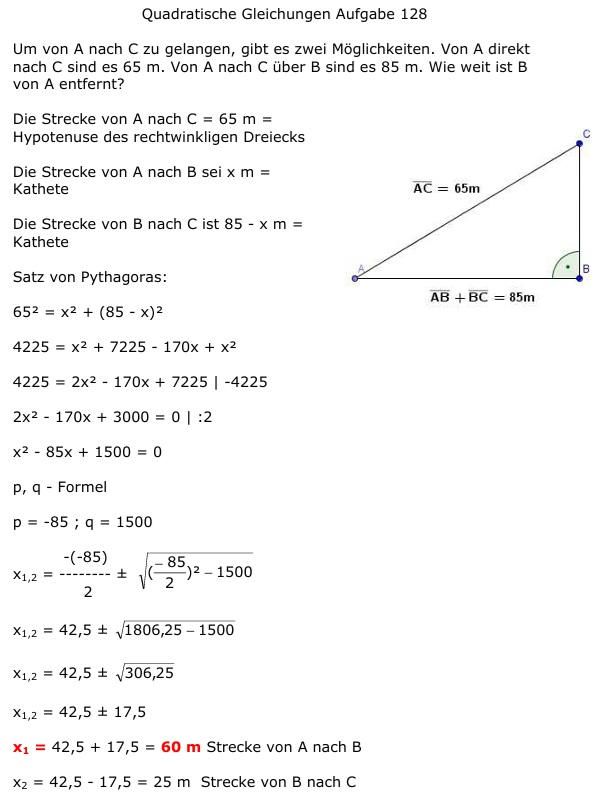

Aufgabe 128
Um von A nach C zu gelangen, gibt es zwei
Möglichkeiten. Von A direkt nach C sind es 65 m.
Von A nach C über B sind es 85 m.
Wie weit ist B von A entfernt?
 Die Strecke von A nach C = 65 m
= Hypotenuse des rechtwinkligen Dreiecks
Die Strecke von A nach B sei x m = Kathete
Die Strecke von B nach C ist 85 - x m = Kathete
Satz von Pythagoras:
652 = x2 + (85 - x)2
4225 = x2 + 7225 - 170x + x2
4225 = 2x2 - 170x + 7225 |-4225
2x2 - 170x + 3000 = 0 |:2
x2 - 85x + 1500 = 0
p, q - Formel
p = -85 ; q = 1500

x1,2 = 42,5 ± 17,5
x1 = 42,5 + 17,5 = 60 m Strecke von A nach B
x2 = 42,5 - 17,5 = 25 m Strecke von B nach C
Die Strecke von A nach C = 65 m
= Hypotenuse des rechtwinkligen Dreiecks
Die Strecke von A nach B sei x m = Kathete
Die Strecke von B nach C ist 85 - x m = Kathete
Satz von Pythagoras:
652 = x2 + (85 - x)2
4225 = x2 + 7225 - 170x + x2
4225 = 2x2 - 170x + 7225 |-4225
2x2 - 170x + 3000 = 0 |:2
x2 - 85x + 1500 = 0
p, q - Formel
p = -85 ; q = 1500

x1,2 = 42,5 ± 17,5
x1 = 42,5 + 17,5 = 60 m Strecke von A nach B
x2 = 42,5 - 17,5 = 25 m Strecke von B nach C